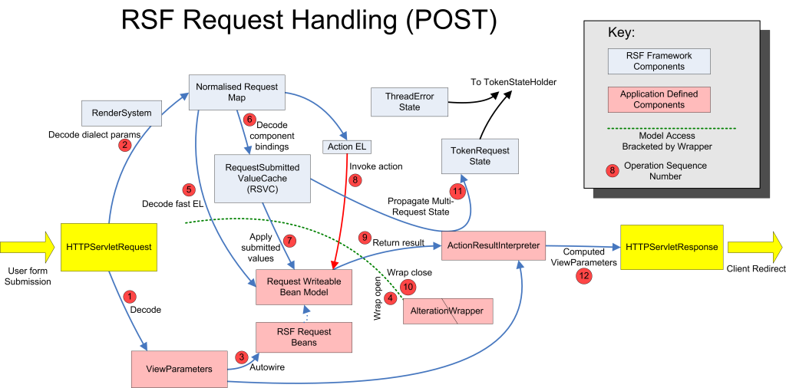
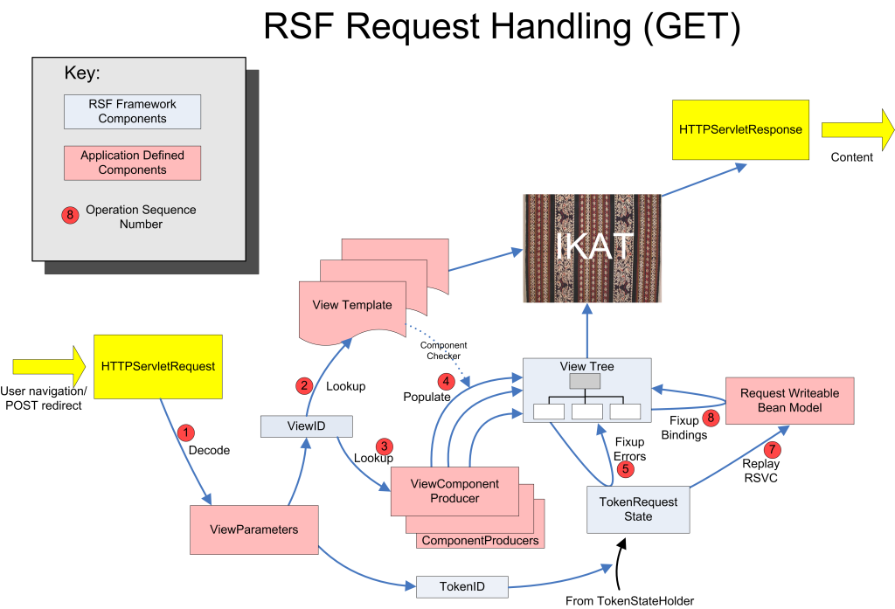

This page provides a general overview of the sequence of operations in handling requests, where RSF is applied to HTTP. It is somewhat technical and detailed, and probably not terribly helpful to someone starting out with RSF, who would be better of looking at some of the written-up samples which appear below "Getting Started" in the left menu.
Since RSF imposes strict HTTP semantics (idempotency of GETs, and non-idempotency of POSTs) and also responds to each POST request with a client redirect, the sequence of handling POSTs and GETs is quite different, although they cooperate to maintain a coherent abstraction to the application developer. In fact, the application developer should not be overly concerned with this sequence, since if RSF is being used in accordance with its design goals, application code will have no dependence on HttpServlet* and should not be specifically aware of the request process. However, an application always has the option to interpose itself in the handling process by, for example, registering an HttpServletRequestAware request-scope bean.
This description is placed here mainly for users who are curious as to how RSF works, or are considering an integration strategy with some form of alien technology.
Note that blue boxes represent RSF-implemented components, while pink boxes represent components defined by the application, generally implementing an RSF interface (except for the request bean model) and registered as a Spring-deployed bean. For some applications, some of these components may have null implementations, or in other scenarios may be harboring an entire other framework, for example an ActionResultInterpreter may be implemented using Spring Web Flow or RIFE Continuations.
POST handling#
|  |
Here is a representation of the sequence shown in the above diagram flattened into a list, with some anntations
- User clicks a 'button' on their webpage, submitting a Form
- POST HttpServletRequest arrives at J2EE webapp
- Decode Request Parameters
- Recover application defined ViewParameters object
- Unpack accumulated parameters from button-name (using HTMLRenderSystem)
- Apply Request Values - BEGIN AlterationWrapper here
- Recover any initial population for RequestSubmittedValueCache from TokenStateHolder using ViewToken in ViewParameters.
- Populate RequestSubmittedValueCache from parameter pairs for this request: (key, new-value) + (key-fossil, ELold-value)
- Play RSVC into request writeable bean model
- Invoke Action (if any), returning String result (if any) - application defined
- END AlterationWrapper here
- Call ActionResultInterpreter with result of Action, computing ViewParameters for new view- application defined "web flow"
- Store accumulated RSVC under NEW token at ARI request, or destroy ALL RSVC for this MultiRequest if ARI signals complete.
- Store any errors accumulated under new token.
- Send HTTP Redirect back to browser using View Parameters generated from ActionResultInterpreter
GET handling#
|  |
- Invoked since either:
- User clicks a link
- User (has clicked) a 'button' submitting a Form - as a result of the POST handler (above), the browser is redirected to GET from a new URL
- Decode ViewParameters
- Locate ViewTemplate files using viewID - application defined, although standard implementation supplied
- Locate ViewComponentProducer and additional ComponentProducers using viewID - application defined producers.
- Generate component tree:
- Invoke ComponentProducers to populate View, with knowledge of ComponentChecker.
- Fixup component tree:
- Recover any error state from TokenStateHolder and apply error fixups to tree
- Replay RSVC: Recover any RSVC state from TokenStateHolder and apply to request beans (optional)
- Apply value binding fixups to tree, if requested by producer.
- Call IKAT renderer with (Component Tree, View Template) to produce FUSED HTML result
- HTML sent back to browser
- User sees result
You can post comments and questions on this page using the following blog. Please set your name using UserPreferences before posting.
Add new attachment
List of attachments
| Kind | Attachment Name | Size | Version | Date Modified | Author | Change note |
|---|---|---|---|---|---|---|
png |
rsf-flow-get-1024.png | 160.6 kB | 1 | 19-Jul-2006 09:36 | AntranigBasman | |
png |
rsf-flow3-1024.png | 130.0 kB | 1 | 19-Jul-2006 09:36 | AntranigBasman |
{kind=link}
{kind=link}
{kind=link}
{kind=link}
Documentation
Developers
Javadocs
Designers
Sample RSF Apps
Presentations
Acronyms
Downloads
Current Release
Trunk
Distributions
Old Versions
Community
Q&A
Forums
Mailing Lists
Issue Tracker
People
Design
Roadmap
Integrations
Concepts
Philosophy